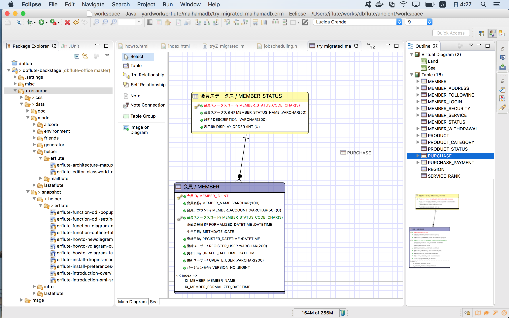
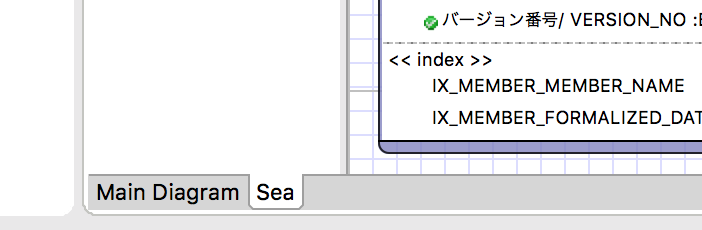
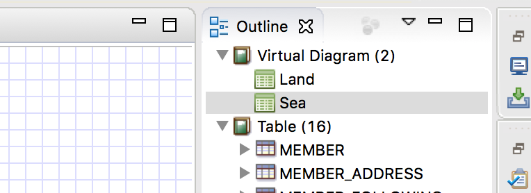

ERFluteの使い方
DBFluteプロジェクトが提供するライブラリ ERFlute の使い方のページ。
そもそも ERFlute とは？については、ERFluteのトップページをご覧ください。
${indexlist}ERFluteの概観
- パレットメニュー
- 左の Select, Table, 1:n Replationship などのメニュー
- ダイアグラム
- テーブルが表示されているERDの表示領域
- Outlineビュー
- 右のOutlineビュー、テーブルなどがアウトラインで表示される
- ダイアグラムモニター
- Outlineビューの下、ダイアグラムの概観が見れる
図 : ERFluteの概観

基本操作
テーブルの操作
- テーブルの作成
- パレットメニューの Table を選択してダイアグラム上へポトり
- テーブルの編集
- ダイアグラム上の Table をダブルクリック or 選択して Enter or Space
- テーブルの削除
- ダイアグラム上の Table を洗濯して削除ボタン
カラムの操作
テーブルのダイアログのカラム一覧にて...
- カラムの作成
- Add ボタン
- カラムの編集
- カラムを選択して Edit ボタン or ダブルクリック or Space
- カラムの削除
- カラムを選択して Delete ボタン
リレーションシップの操作 (FK制約)
- リレーションシップの作成
- メニューの 1:n Relationship を選択して...
- ダイアグラム上の "FK先テーブル" を選択してから、"FK元テーブル" を選択。
- FK "先" (MEMBER と MEMBER_STATUS であれば、MEMBER_STATUS) から選択するので、間違えないように。 (ERMaster-bから引き継いでいる挙動です。なので 1:n Relationship)
ノートの操作
- ノートの作成
- パレットメニューの Note を選択してダイアグラム上へポトり
- ノートの編集
- ダイアグラム上の Note をダブルクリック or 選択して Enter or Space
- ノートの関連付け
- パレットメニュー上の Note Connection を洗濯して Table と Note を...
- ノートの削除
- ダイアグラム上の Note を洗濯して削除ボタン
ノートは、DBコメントでもないので、DDLには一切反映されず SchemaHTML にも載りませんが、"図上で補足したい" というようなコメントがあったら、ノートに書くと良いでしょう。
テーブルグループの操作
※現時点 (0.4.4) あまり良い動作をしないので積極的な利用はオススメしません。仮想ダイアグラムを使いましょう。
TODO jflute now writing...
ダイアグラム上の画像埋め込み
画像を埋め込んで何が嬉しいんだ？という話もあります
TODO jflute now writing...
テーブルのOutline検索 *Point
ダイアグラム上で ctrl + O (おー) すると、図上に Outline が表示され、テーブル名のキーワード入れてテーブルを選択 (Enter) すると、そのテーブルに飛びます。
図 : Outlineによるテーブル検索

DDLや画像のエクスポート
DDLのエクスポート
ダイアグラム上の右クリックメニューで、Export - DDL すると、DDL出力のためのダイアログが表示されます。 DDLのオプションを指定してOKすると、DDLが出力されます。
図 : DDLのエクスポートメニュー

DDLの出力先パスは、workspace内のパスになっています。(e.g. /maihama-base/modeling/...)
画像のエクスポート
ダイアグラム上の右クリックメニューで、Export - Image すると、出力先を指定するダイアログが表示されます。 そして、出力先を選ぶと画像が出力されます。
仮想ダイアグラム
そもそも仮想ダイアグラムとは？
そもそも仮想ダイアグラム (Virtual Diagram) とは、一部のテーブルだけで構成できるダイアグラムです。 実体を管理せず、テーブルを仮想的に参照して別のモデリングビューを表現できるものです。 例えば、ダイアグラム上でテーブルを削除しても、ダイアグラムから消えるだけで実体は削除されません。
例えば、会員系、商品系というように業務カテゴリごとに分けることを想定しています。
ちょうど、Seaという名前の仮想ダイアグラムに、PURCHASEテーブルを含めようと、Outlineのテーブルオブジェクトをドラッグ&ドロップしようとしてるところですね。
図 : 仮想ダイアグラムの概観 
{kind=link}
対してメインダイアグラム
対して、デフォルトのダイアグラムを、メインダイアグラム (Main Diagram) と呼びます。実体を直接管理しているので、例えばダイアグラム上でテーブルの削除をすると、そのまま実体の削除になります
仮想ダイアグラムの見た目
仮想ダイアグラムは、メインのダイアグラムとは別のタブで開かれます。
図 : 仮想ダイアグラムのタブ 
{kind=link}
Outline の Virtual Diagram にて管理されます。ダブルクリックすることで開けます。 (何か描画がおかしくなったら、もう一度ここをダブルクリックすると良いでしょう)
図 : 仮想ダイアグラムのOutline 
{kind=link}
仮想ダイアグラムの使い方
- 仮想ダイアグラムの作成
- ダイアグラム上で右クリックして、new VirtualDiagram() (*1)
- 仮想ダイアグラムを開く
- Outline上の仮想ダイアグラムをダブルクリック
- テーブルの呼び寄せ
- Outline上でテーブル選択してドラッグ&ドロップ
- テーブルの除外
- ダイアグラム上でテーブル選択して削除ボタン (実体が消えるわけじゃない)
- テーブルの作成
- メインダイアグラムと同じようにできる
- FK制約の作成
- メインダイアグラムと同じようにできる
- あれこれ
- だいたいメインダイアグラムと同じようにできる
(*1): 現時点(0.4.4)では、new VirtualDiagram()してもすぐに開かないので、Outline上の仮想ダイアグラムをダブルクリックして開いてください。
仮想ダイアグラムのバッドノウハウ
- 仮想ダイアグラムの削除
- できないので、XML技で該当の vdiagram タグを削除
- 描画が変になったら再描画
- FK線がすっ飛んだら、Outlineの仮想ダイアグラムをダブルクリック
XML技
ERMaster-bからフォークしても、すぐにどんどん改善されるわけではないので、 おかしなことなど何かあったら、ermファイルをテキストエディタで開いて、中の XML を直接修正して直すと良いでしょう。
- カラムの削除
- XML上で columns タグの該当 normal_column タグを削除
- 仮想ダイアグラムの削除
- XML上で vdiagram タグの該当タグを削除
一度は、見て見ると良いと思います。思ったよりも敷居は高くないでしょう。
図 : ermファイルのxml

XMLを極めたいなら...
ぜひ、こちらを:
e.g. specification of XML for erm file @erm
<diagram>
<presenter>ERFlute</presenter> // ERFluteのファイルであることを示すマーク
<page_setting>
// ページ設定、印刷とか
</page_setting>
<color>
// テーブルを作成するときなどに使われるデフォルトの背景色、RGB
</color>
<font_name></font_name>
<font_size>9</font_size>
<settings>
// ダイアグラムの基本設定など
<export_setting>
// DDLなどのエクスポートの設定
</export_setting>
<category_settings>
// カテゴリの設定 (ERFluteだと使ってないかも)
</category_settings>
<model_properties>
// ダイアグラム自体の説明するマニアックな機能の設定
</model_properties>
<table_properties>
// わからない
</table_properties>
<environment_setting>
// わからない
</environment_setting>
</settings>
<tablespace_set>
// 表領域の設定だと思われる
</tablespace_set>
<diagram_walkers> // ダイアグラム上を歩く人、テーブルとかノートとか
<table> // ひとつのテーブルを表す
<physical_name>MEMBER</physical_name> // 物理名
<logical_name>会員</logical_name> // 論理名
<description>普通の会員だよん</description> // DBコメント
<font_name>Lucida Grande</font_name> // ダイアグラム上のフォント
<font_size>9</font_size> // ダイアグラム上のフォントサイズ
<x>580</x> // ダイアグラム上の座標x
<y>254</y> // ダイアグラム上の座標y
<color> // ダイアグラム上の背景色、RGB
<r>128</r>
<g>128</g>
<b>192</b>
</color>
<connections> // リレーションシップたち
<relationship> // 一つのリレーションシップ(FK制約)を表す
<name>FK_MEMBER_MEMBER_STATUS</name> // FK制約名
<source>table.MEMBER_STATUS</source> // FK先のテーブル (sourceだけど先、FK線をひくときの先というニュアンス)
<target>table.MEMBER</target> // FK元のテーブル (targetだけど元、FK線をひくときの元というニュアンス)
<fk_columns> // FKカラムたち
<fk_column> // FKカラムたち
<fk_column_name>MEMBER_STATUS_CODE</fk_column_name> // FKカラム名
</fk_column>
</fk_columns>
<parent_cardinality>1</parent_cardinality> // FK先のカージナリティ
<child_cardinality>0..n</child_cardinality> // FK元のカージナリティ
<reference_for_pk>true</reference_for_pk> // PKに対するFK (true or false)
</relationship>
<relationship>
...
</relationship>
</connections>
<columns> // カラムたち
<normal_column> // 一つの普通のカラムを表す
<physical_name>MEMBER_ID</physical_name> // 物理名
<logical_name>会員ID</logical_name> // 論理名
<type>integer</type> // データ型 (ERFlute共通型)
<description>自動採番だよん</description> // DBコメント
<not_null>true</not_null> // NotNull制約 (true or false)
<primary_key>true</primary_key> // PK制約 (true or false)
<auto_increment>true</auto_increment> // Identity (true or false)
</normal_column>
<normal_column> // 一つの普通のカラムを表す
<physical_name>MEMBER_NAME</physical_name> // 物理名
<logical_name>会員名称</logical_name> // 論理名
<type>varchar(n)</type> // データ型 (ERFlute共通型)
<length>100</length> // データサイズ
<description>会員のフルネーム</description> // DBコメント
<not_null>true</not_null> // NotNull制約 (true or false)
</normal_column>
<normal_column>
...
</normal_column>
<column_group>共通カラム</column_group> // 定型カラムを定義する...
<column_group>排他制御カラム</column_group> // カラムグループの名前
</columns>
<indexes> // インデックスたち
<index> // 一つのインデックスを表す
...
</index>
</indexes>
<compound_unique_key_list> // 複合ユニーク制約たち
...
</compound_unique_key_list>
<table_properties> // テーブルの追加情報、マニアック
</table_properties>
</table>
<table>
...
</table>
</diagram_walkers>
<vdiagrams> // 仮想ダイアグラムたち
<vdiagram> // 一つの仮想ダイアグラムを表す
<vdiagram_name>Sea</vdiagram_name> // 仮想ダイアグラムの名前
...
</vdiagram>
</vdiagrams>
<column_groups> // カラムグループたち
...
</column_groups>
<sequence_set> // シーケンスたち
...
</sequence_set>
<trigger_set> // トリガーたち (あんまり使わないかも)
...
</trigger_set>
</diagram>